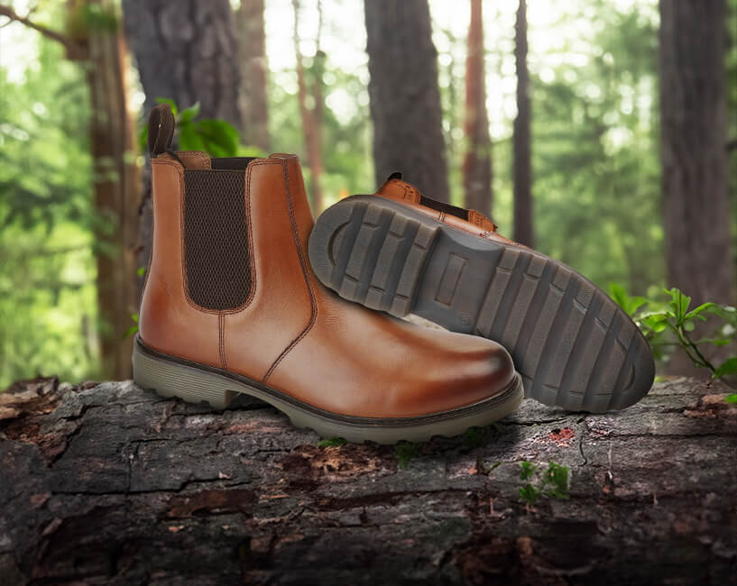
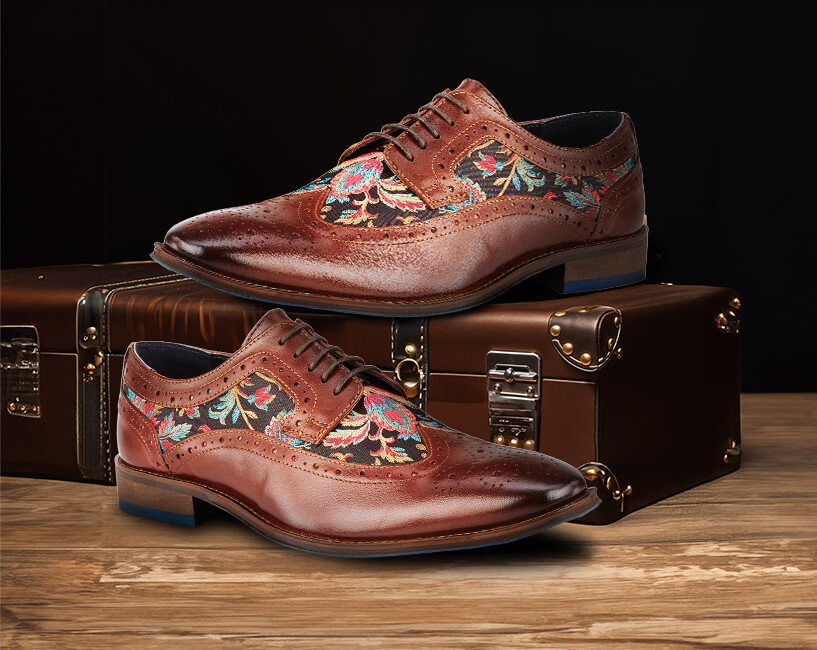
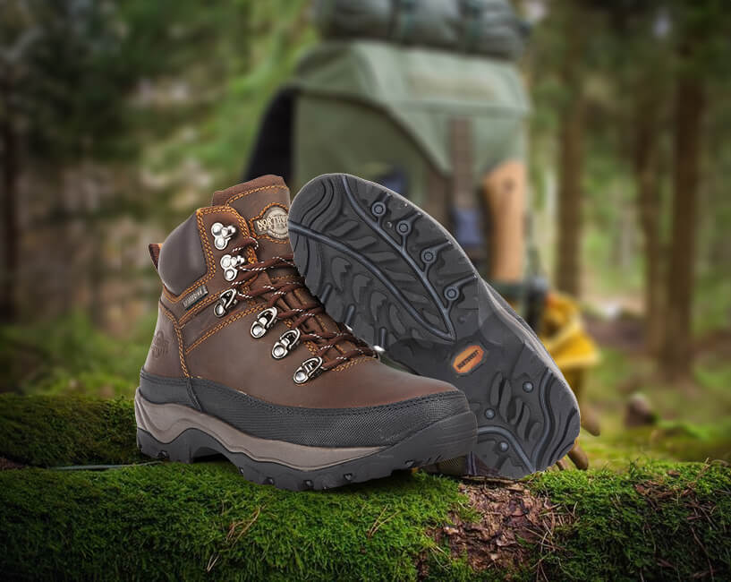
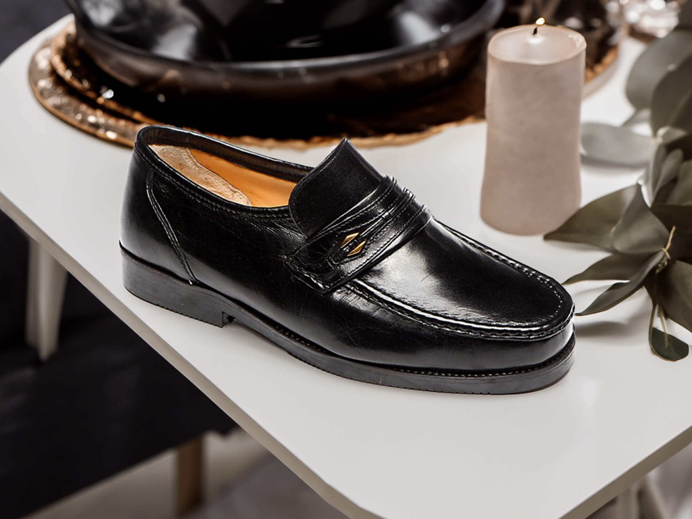
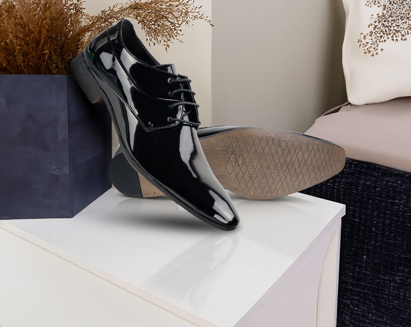

Catesby is a distinguished brand under Patrick Shoes Limited, proudly based in Crick, Northamptonshire. Established in 1952, Catesby has become synonymous with classic British style, offering premium quality footwear that embody elegance, craftsmanship, and timeless design.
With over seven decades of experience, Catesby has been at the forefront of British footwear, creating products that stand the test of time. Rooted in tradition, our brand has grown from a small, local business into a name renowned for quality and style across the nation. Every pair of Catesby shoes is a testament to the enduring craftsmanship that has defined our brand since its inception. For generations, Catesby has been dedicated to delivering footwear that reflects the best of British style. Our designs are timeless, blending traditional aesthetics with modern sensibilities, making them a staple for those who value enduring fashion. The brand offers a diverse range of footwear, including Country Collection, Formal Collection, Equestrian Collection, Casual Collection.

Introducing Amen Footwear, a journey inspired by passion, style, and individuality, straight from the heart of the UK. Born out of a desire to merge fashion with a rebellious spirit, Amen Footwear is not just about shoes; it's a statement, a lifestyle, and a celebration of self-expression.
We don't just craft shoes, we curate experiences. Steeped in the rich tapestry of British heritage and design, our brand stands as a testament to timeless elegance and impeccable craftsmanship. Established with an unwavering commitment to excellence, we specialize in creating footwear that transcends mere functionality to become an expression of individual style and sophistication.



Northwest Territory, a reputable brand under Patrick Shoes Limited based in Crick, Northamptonshire, specializes in premium outdoor footwear known for its high-quality leather, waterproof, and durable designs. With over fifty years of boot making expertise, Northwest Territory resides in the County of Northamptonshire. To this day, our commitment to craftsmanship and value remains unchanged. We continue to craft high quality boots and shoes. Using the best possible materials, to create a product built to last.
From the very beginning, Northwest Territory stood for craftsmanship and resilience. We understood that outdoor enthusiasts needed footwear that would not just protect their feet but would be their steadfast companions on every expedition. Our footwear is meticulously crafted with hand-selected, high-quality materials, prioritizing durability. This includes the use of waxed full-grain leather, Nubuck and premium suede, ensuring they could endure the challenges of the outdoors.
We know that comfort is key, especially on long hikes and walks. That's why Northwest Territory products integrate cutting-edge cushioning and arch support technologies. Our shoes aren't just meant to protect your feet; they're meant to be comfortable companions on every adventure, whether you're taking a leisurely stroll through the woods or conquering challenging trails.
Northwest Territory: Made to be worn!

Luca Mancini is a hallmark of comfort and quality. Celebrated for its timeless appeal and durable construction, Luca Mancini has been a staple in the market for three decades. The range is renowned for its superior comfort, crafted with a focus on generous fitting to accommodate various foot shapes and sizes.
The leather used in Luca Mancini shoes is not only high-quality but also forms both the upper and lining of the shoes, ensuring a soft, breathable, and long-lasting wear experience. This attention to material selection underscores the brand's commitment to comfort and durability, making it a top choice for those seeking reliable everyday footwear.
Over the past 30 years, Luca Mancini has consistently evolved, expanding its collection to meet the changing tastes and needs of the customers. Despite the evolving fashion landscape, the brand has maintained its core values of comfort and quality, which is reflected in its growing sales and increasing variety. Each year, Luca Mancini introduces new designs and innovations, keeping the brand fresh and relevant while still honouring the traditional craftsmanship that customers have come to expect.



Montecatini is a distinguished brand in the world of dress shoes, known for its high-quality leather craftsmanship. These dress shoes are designed for those who appreciate elegance and durability, offering a refined look for any formal occasion.
Montecatini shoes are available in three distinct leather finishes: patent, high shine, and matte. In addition to the variety of finishes, Montecatini dress shoes offer a choice between Cuban and standard heels.
Montecatini dress shoes are crafted with precision, ensuring both comfort and longevity.